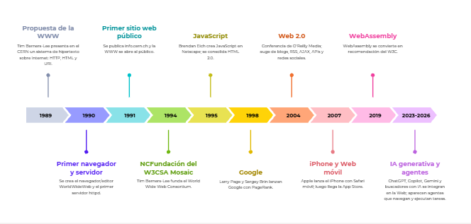

1989
Propuesta de la WWW
Tim Berners-Lee presenta en el CERN el sistema de hipertexto que daría origen a la Web.
Los hitos más importantes desde 1989 hasta la Web actual. También puedes ver la versión gráfica en Canva.

Tim Berners-Lee presenta en el CERN el sistema de hipertexto que daría origen a la Web.
Se crea el navegador WorldWideWeb y el primer servidor HTTP.
Se publica info.cern.ch y la Web se abre al mundo.
Se crea el consorcio que define los estándares abiertos de la Web.
Netscape incorpora JavaScript y la Web gana interactividad.
PageRank revoluciona la búsqueda y organiza el crecimiento de la Web.
Blogs, RSS, AJAX y redes sociales: el usuario pasa a crear contenido.
El acceso móvil masivo transforma el diseño y el consumo de la Web.
Video, audio y canvas sin plugins: base de las aplicaciones modernas.
Las webs pueden instalarse, funcionar offline y enviar notificaciones.
Rendimiento casi nativo en el navegador para juegos, IA y edición.
Auge de blockchain, NFT y DAO: propuesta de Web descentralizada.
La Web se vuelve conversacional: asistentes y agentes ejecutan tareas.